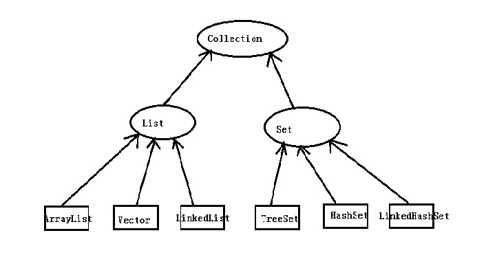
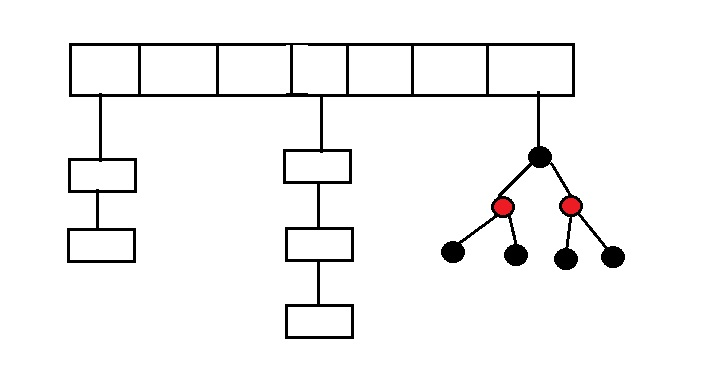

之前学习了java中从语法到常用类的部分。在编程中有这样一类需求，就是要保存批量的相同数据类型。针对这种需求一般都是使用容器来存储。之前说过Java中的数组，但是数组不能改变长度。Java中提供了另一种存储方式，就是用容器类来处理这种需要动态添加或者删除元素的情况
概述
Java中最常见的容器有一维和多维。单维容器主要是一个节点上存储一个数据。比如列表和Set。而多维是一个节点有多个数据，例如Map，每个节点上有键和值。
单维容器的上层接口是Collection，它根据存储的元素是否为线性又分为两大类 List与Set。它们根据实现不同，List又分为ArrayList和LinkedList；Set下面主要的实现类有TreeSet、HashSet。
它们的结构大致如下图:

Collection 接口
Collection 是单列容器的最上层的抽象接口，它里面定义了所有单列容器都共有的一些方法:
boolean add(E e)：向容器中添加元素void clear(): 清空容器boolean contains(Object o): 判断容器中是否存在对应元素boolean isEmpty(): 容器是否为空boolean remove(Object o): 移除指定元素<T> T[] toArray(T[] a): 转化为指定类型的数组
List
list是Collection 中的一个有序容器，它里面存储的元素都是按照一定顺序排序的，可以使用索引进行遍历。允许元素重复出现，它的实现中有 ArrayList和 LinkedList
- ArrayList 底层是一个可变长度的数组，它具有数组的查询快，增删慢的特点
- LinkedList 底层是一个链表，它具有链表的增删快而查询慢的特点
Set
Set集合是Collection下的另一个抽象结构，Set类似于数学概念上的集合，不关心元素的顺序，不能存储重复元素。
- TreeSet是一颗树，它拥有树形结构的相关特定
- HashSet: 为了加快查询速度，它的底层是一个hash表和链表。但是从JDK1.8以后，为了进一步加快具有相同hash值的元素的查询，底层改为hash表 + 链表 + 红黑树的结构。相同hash值的元素个数不超过8个的采用链表存储，超过8个之后采用红黑树存储。它的结构类似于下图的结构

在存储元素的时候，首先计算它的hash值，根据hash值，在数组中查找，如果没有，则在数组对应位置存储hash值，并在数组对应位置添加元素的节点。如果有，则先判断对应位置是否有相同的元素，如果有则直接抛弃否则在数组对应位置下方的链表或者红黑树中添加节点。
从上面的描述看，想要在HashSet中添加元素，需要首先计算hash值，在判断集合中是否存在元素。这样在存储自定义类型的元素的时候，需要保证类能够正确计算hash值以及进行类型的相等性判断。因此要重写类的hashCode和equals 方法。
例如下面的例子
1 | class Person{ |
上面说到HashSet是无序的结构，如果我们想要使用hashSet，但是又想它有序，该怎么办？在Set中提供了另一个实现，LinkedHashMap。它的底层是一个Hash表和一个链表，Hash表用来存储真正的数据，而链表用来存储元素的顺序，这样就结合了二者的优先。
Map
Map是一个双列的容器，一个节点存储了两个值，一个是元素的键，另一个是值。其中Key 和 Value既可以是相同类型的值，也可以是不同类型的值。Key和Value是一一对应的关系。一个key只能对应一个值，但是多个key可以指向同一个value，有点像数学中函数的自变量和值的关系。
Map常用的实现类有: HashMap和LinkedHashMap。
常用的方法有:
void clear(): 清空集合boolean containsKey(Object key): map中是否包含对应的键V get(Object key): 根据键返回对应的值V put(K key, V value): 添加键值对boolean isEmpty(): 集合是否为空int size(): 包含键值对的个数
遍历
针对列表类型的，元素顺序固定，我们可以使用循环依据索引进行遍历，比如
1 | for(int i = 0; i < list.size(); i++){ |
而对于Set这种不关心元素的顺序的集合来说，不能再使用索引了。针对单列集合，有一个迭代器接口，使用迭代器可以实现遍历
迭代器
迭代器可以理解为指向集合中某一个元素的指针。使用迭代器可以操作元素本身，也可以根据当前元素寻找到下一个元素，它的常用方法有:
boolean hasNext(): 当前迭代器指向的位置是否有下一个元素E next(): 获取下一个元素并返回。调用这个方法后，迭代器指向的位置发生改变
使用迭代器的一般步骤如下:
- 使用集合的
iterator()返回一个迭代器 - 循环调用迭代器的
hasNext方法，判断集合中是否还有元素需要遍历 - 使用
next方法，找到迭代器指向的下一个元素
1 | //假设set是一个 HashSet<String>集合 |
Map遍历
索引和迭代器的方式只能遍历单列集合，像Map这样的多列集合不能使用上述方式，它有额外的方法，主要有两种方式
- 获取key的一个集合，遍历key集合并通过get方法获取value
- 获取键值对组成的一个集合，遍历这个新集合来得到键值对的值
针对第一种方法，Map中有一个 keySet() 方法。这个方法会获取到所有的key值并保存将这些值保存为一个新的Set返回，我们只要遍历这个Set并调用 Map的get方法即可获取到对应的Value, 例如:
1 | // 假设map 是一个 HashMap<String, String> 集合 |
针对第二种方法，可以先调用 Map的 entrySet() 获取一个Entry结构的Set集合。Entry 中保存了一个键和它对应的值。使用结构中的 getKey() 和 getValue() 分别获取key和value。这个结构是定义在Map中的内部类，因此在使用的时候需要使用Map这个类名调用
1 | // 假设map 是一个 HashMap<String, String> 集合 |
for each 循环
在上述遍历的代码中，不管是使用for或者while都显得比较麻烦，我们能像 Python 等脚本语言那样，直接在 for 中使用迭代吗？从JDK1.5 以后引入了for each写法，使Java能够直接使用for迭代，而不用手工使用迭代器来进行迭代。
1 | for (T t: set); |
上述是它的简单写法。
例如我们对遍历Set的写法进行简化
1 | //假设set是一个 HashSet<String>集合 |
我们说使用 for each写法主要是为了简化迭代的写法，它在底层仍然采用的是迭代器的方式来遍历，针对向Map这样无法直接使用迭代的结构来说，自然无法使用这种简化的写法，针对Map来说需要使用上述的两种遍历方式中的一种，先转化为可迭代的结构，然后使用for each循环
1 | // 假设map 是一个 HashMap<String, String> 集合 |
泛型
在上述的集合中，我们已经使用了泛型。
泛型与C++ 中的模板基本类似，都是为了重复使用代码而产生的一种语法。由于这些集合在创建，增删改查上代码基本类似，只是事先不知道要存储的数据的类型。如果没有泛型，我们需要将所有类型对应的这些结构的代码都重复写一遍。有了泛型我们就能更加专注于算法的实现，而不用考虑具体的数据类型。
在定义泛型的时候，只需要使用 <>中包含表示泛型的字母即可。常见的泛型有:
- T 表示Type
- E 表示 Element
<> 中可以使用任意标识符来表示泛型，只要符合Java的命名规则即可。使用 T 或者 E 只是为了方便而已，比如下面的例子
1 | public static <Element> void print(Element e){ |
当然也可以使用Object 对象来实现泛型的重用代码的功效，在对元素进行操作的时候主要使用java的多态来实现。但是使用多态的一个缺点是无法使用元素对象的特有方法。
泛型的使用
泛型可以在类、接口、方法中使用
在定义类时定义的泛型可以在类的任意位置使用
1 | class DataCollection<T>{ |
在定义类的时候定义的泛型在创建对象的时候指定具体的类型.
也可以在定义接口的时候定义泛型
1 | public interface DataCollection<T>{ |
定义接口时定义的泛型可以在定义实现类的时候指定泛型，或者在创建实现类的对象时指定泛型
1 | public class StringDataCollectionImpl implements DataCollection<String>{ |
除了在定义类和接口时使用外，还可以在定义方法的时候使用，针对这种情况，不需要显示的指定使用哪种类型，由于接收返回数据和传入参数的时候已经知道了
1 | public static <Element> Element print(Element e){ |
###泛型的通配符
在使用通配符的时候可能有这样的需求：我想要使用泛型，但是不希望它传入任意类型的值，我只想要处理继承自某一个类的类型，就比如说我只想保存那些实现了某个接口的类。我们当然可以将数据类型定义为某个接口，但是由于多态的这一个缺陷，实现起来总不是那么完美。这个时候可以使用泛型的通配符。
泛型中使用 ? 作为统配符。在通配符中可以使用 super 或者 extends 表示泛型必须是某个类型的父类或者是某个类型的实现类
1 | class Fruit{ |
上述代码中 putFruit 函数中只允许 传递 Fruit 类的子类或者它本身作为参数。
当然也可以使用 <? super T> 表示只能取 T类型的父类或者T类型本身。